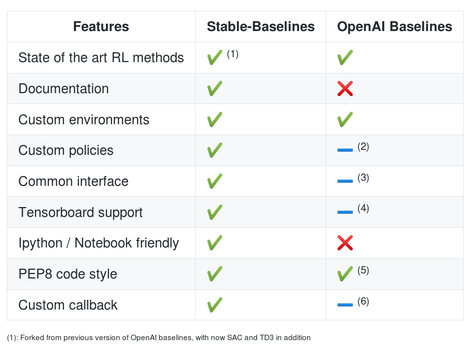
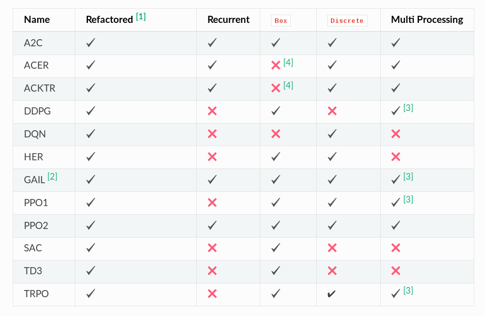
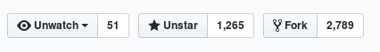
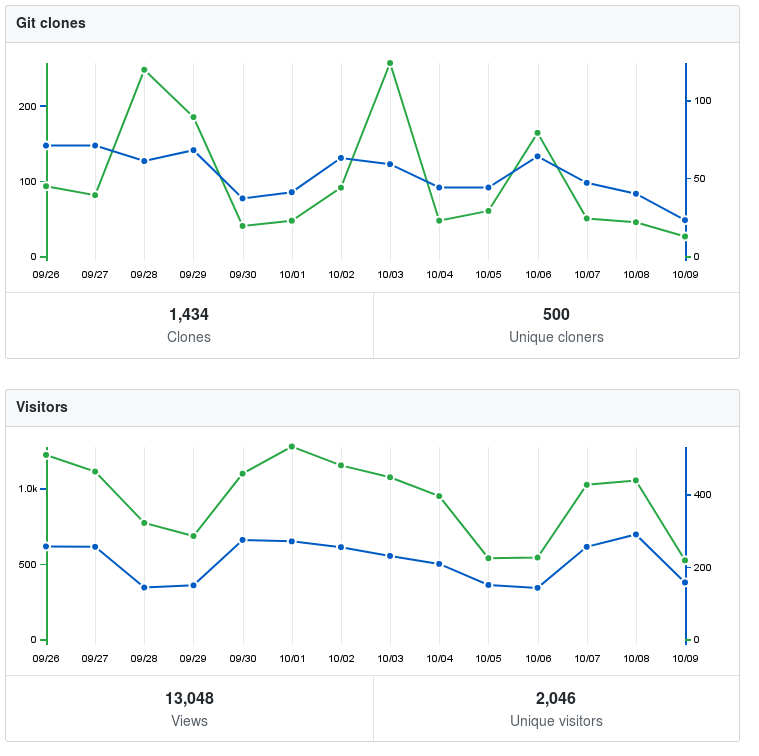
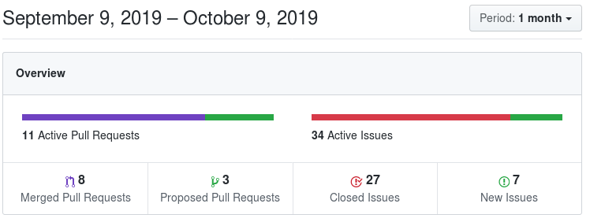
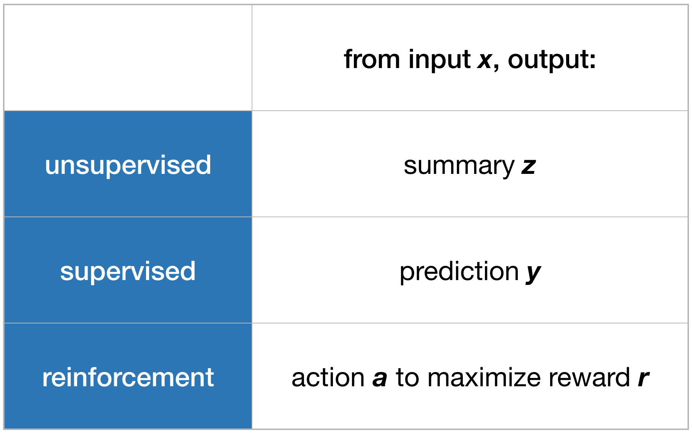
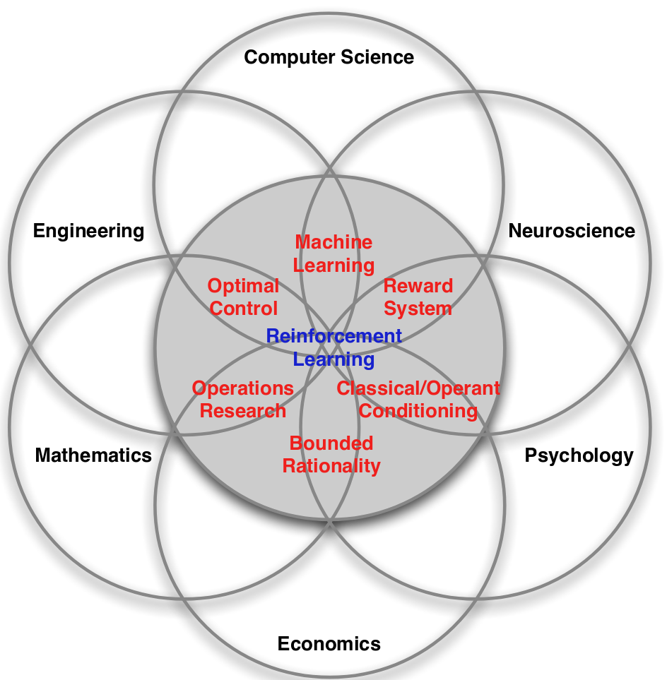
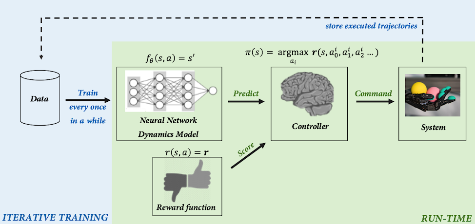
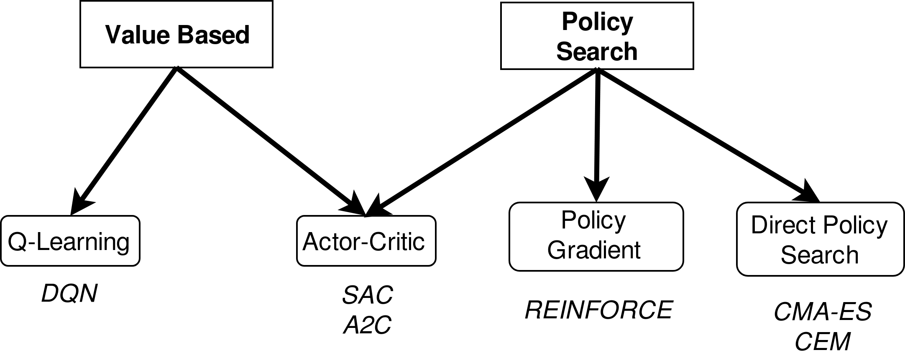

Stable Baselines Tutorial
Reinforcement Learning Made Easy
Ashley HILL
CEA
CEA
Edward Beeching
INSA Lyon
INSA Lyon
Antonin RAFFIN
German Aerospace Center (DLR)
German Aerospace Center (DLR)
Examples of Reinforcement Learning for Robotics
Learning Agile and Dynamic Motor Skills for Legged Robots (1)
Dexterous Manipulation
Learning to toss
Learning to Drive in Minutes

Deep Mimic
Bonus
Stable Baselines Library
Features
Algorithms
Active Community




Tutorial
Github repo: https://github.com/araffin/rl-tutorial-jnrr19
- Getting Started Colab Notebook
- Gym Wrappers, saving and loading models Colab Notebook
- Multiprocessing Colab Notebook
- Callbacks and hyperparameter tuning Colab Notebook
- Creating a custom gym environment Colab Notebook
à vous de jouer!
https://github.com/araffin/rl-tutorial-jnrr19
Source: Deep Mimic (Jason Peng)
Branches of Machine Learning
Source: Outsider Tour RL by Ben Recht
Many Face of RL
Source: David Silver Course
RL 101

Source: Lilian Weng blog

Credit: L.M Tenkes
Notation
| Reinforcement Learning | Classical Control | |
|---|---|---|
| State | $s_t$ | $x_t$ |
| Action | $a_t$ | $u_t$ |
| Reward | $r_t$ | $-c_t$ |
Main Components of an RL algo
An RL algo may include one or more of these components:
- Policy: agent's behavior function ($a_t = \pi(s_t)$)
- Value function: how good is each state and/or action ($V(s_t)$ or $Q(s_t, a_t)$)
- Model: agent's representation of the environment ($s_{t+1} = f(s_t, a_t)$ or $r_{t+1} = g(s_t, a_t)$)
Model Free vs Model Based
- Model Free: No explicit representation of the environment
- Model Based: Rely on a the model of the environment
- known, given to the agent (ex: Chess)
- learned explicitly (from scratch, parameter identification)
Model Based RL
Source: BAIR blog
On-Policy vs Off-policy
- On-Policy: The trajectories must be generated by the most recent policy
- Off-Policy: The trajectories can be collected by any behavior policy
Model Free RL Landscape
Exploration vs Exploitation Trade-Off (1)
Exploration: Try a new beer
Exploitation: Drink your favorite beer
Exploration vs Exploitation Trade-Off (2)
Exploration: gather more information about the environment
Exploitation: use the best known strategy to maximize reward
Common Assumptions
Markov: the current state depends only on the previous step, not the complete history
Fully Observable: agent directly observe the environment state ($o_t = s_t$) Ex: Chess vs Poker
Recap
- RL 101: state, action, reward
- Policy, value function, model
- Model free vs model based
- On-policy vs off-policy
- Model free landscape
- Exploration vs exploitation
- Common assumptions
Current Challenges of RL
- Sample efficiency (millions of samples required)
- Reward engineering ("RewArt")
- Stability and reproducibility (improving)
- Jittering (action noise and oscillations)
Topics not covered
- Objective function (discounted and undiscounted return)
- Credit assignment problem
- Bias/variance trade-off
- Modern tricks (replay buffer, ...)
- How to explore ($\epsilon$-greedy, parameter space, ...)
- Successes in simulation/games (Mujoco, Atari, Go, Dota2, Starcraft)
Resources
- https://www.argmin.net/2018/06/25/outsider-rl/
- http://www0.cs.ucl.ac.uk/staff/d.silver/web/Teaching.html
- https://www.youtube.com/channel/UCLRpWDzTRLlQn7lMRwvK8Hg/videos
- http://pages.isir.upmc.fr/~sigaud/teach/
- https://spinningup.openai.com/en/latest/
- http://rail.eecs.berkeley.edu/deeprlcourse/
- https://lilianweng.github.io/lil-log/2018/02/19/a-long-peek-into-reinforcement-learning.html
- https://sites.google.com/view/deep-rl-bootcamp/lectures
- http://louiskirsch.com/maps/reinforcement-learning
RL Zoo: A collection of 120+ trained RL agents
- Provide a simple interface to train and enjoy RL agents
- Benchmark the different Reinforcement Learning algorithms
- Provide tuned hyperparameters for each environment and RL algorithm
- Have fun with the trained agents!
RL Zoo: Training
HalfCheetahBulletEnv-v0:
env_wrapper: utils.wrappers.TimeFeatureWrapper
n_timesteps: !!float 2e6
policy: 'MlpPolicy'
gamma: 0.99
buffer_size: 1000000
noise_type: 'normal'
noise_std: 0.1
learning_starts: 10000
batch_size: 100
learning_rate: !!float 1e-3
train_freq: 1000
gradient_steps: 1000
policy_kwargs: 'dict(layers=[400, 300])'
python train.py --algo td3 --env HalfCheetahBulletEnv-v0
python enjoy.py --algo td3 --env HalfCheetahBulletEnv-v0
python -m utils.record_video --algo td3 --env HalfCheetahBulletEnv-v0 -n 1000
RL Zoo: Hyperparameter Optimization
- Easy to setup
- Clean API
- Good documentation
- TPE, GP, CMAES, median pruner, ...
python train.py --algo ppo2 --env MountainCar-v0 \
--optimize --n-trials 1000 --n-jobs 2 \
--sampler tpe --pruner median